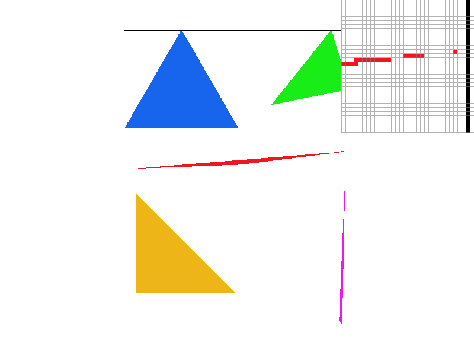
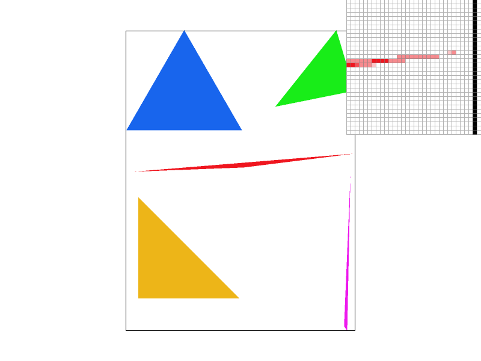
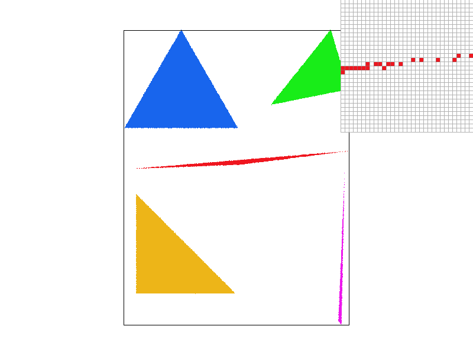
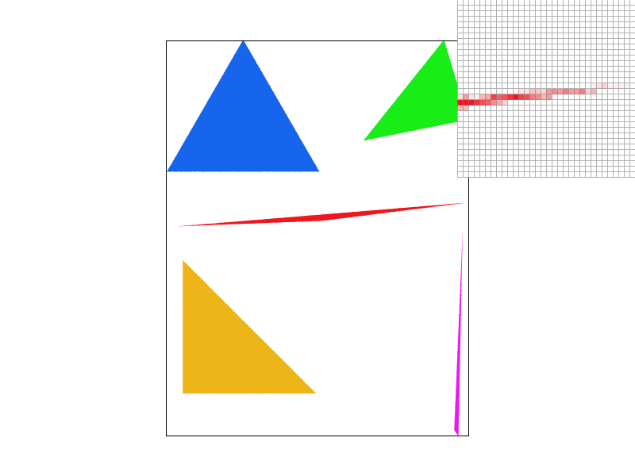
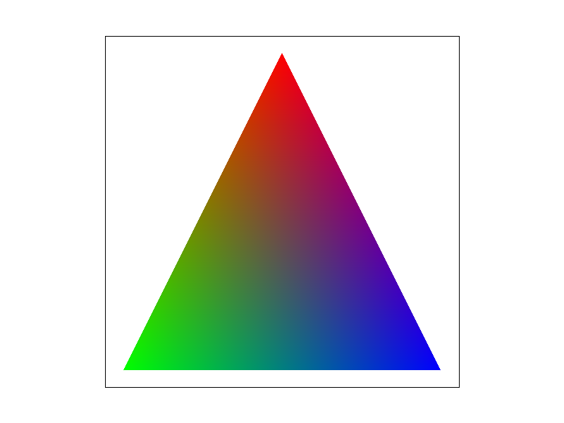
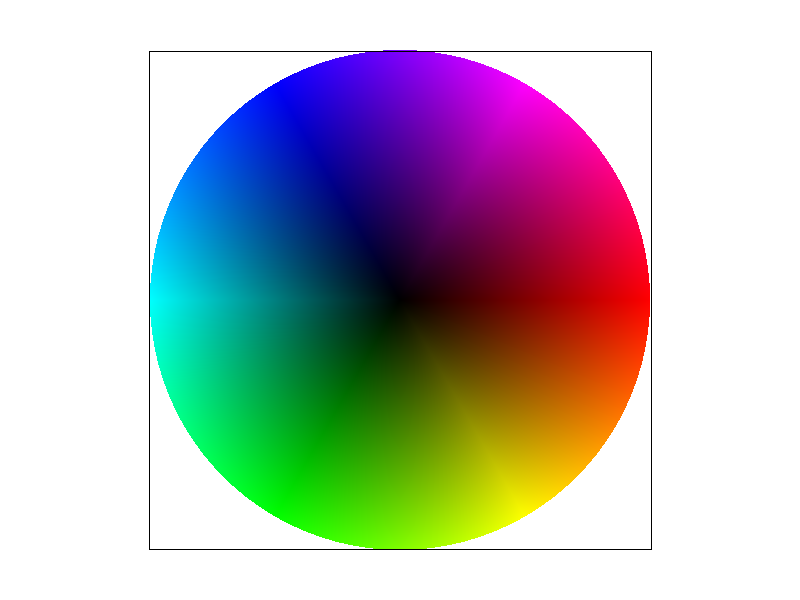
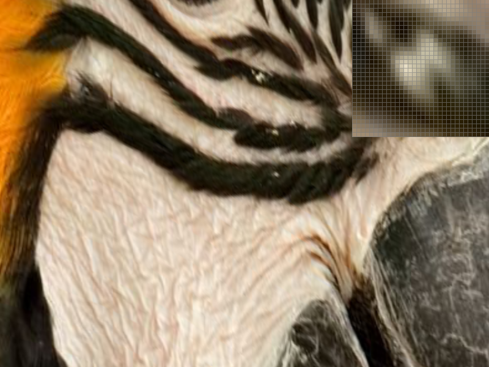
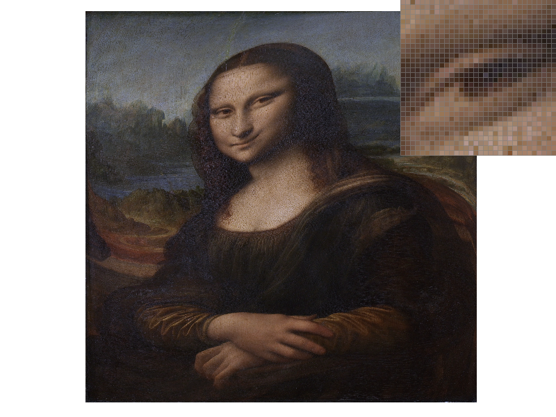

CS184/284A Spring 2025 Homework 1 Write-Up
Link to webpage: cal-cs184-student.github.io/hw-webpages-db-dp/hw1/index.html
Link to GitHub repository: github.com/cal-cs184-student/sp25-hw1-d-d

Overview
As part of this homework, we implemented a simplified 2D rasterizer capable of rendering vector graphics, which we used SVG files to test. Additionally, we had to construct a pipeline for rasterization. Some of the functionalities that we included were triangle rasterization, supersampling for antialiasing, barycentric color interpolation, texture mapping with multiple sampling methods, and mipmap-based level sampling. These tasks allowed us to explore various techniques used in modern graphics pipelines. Moreover, the project was divided into several tasks, where each focused on a specific area of rasterization. For example, we first began by implementing basic triangle rasterization, followed by adding antialiasing through supersampling to improve image quality. We then worked with 2D transformations, implemented color interpolation across triangles using barycentric coordinates, and performed texture mapping with different sampling techniques, which included nearest-neighbor and bilinear interpolation. Towards the end, a significant step we accomplished was integrating mipmap-based texture sampling to optimize image quality and performance when dealing with textures at a dynamic scale. One of the things that we found interesting was the trade between different texture sampling methods and their impact on rendering performance. We specifically liked seeing the visual improvements when switching from nearest-neighbor sampling to bilinear and trilinear filtering. Seeing these outcomes with our own eyes made our work that much more rewarding.
Task 1: Drawing Single-Color Triangles
For this task, we implemented a basic triangle rasterization algorithm. The end goal was to render filled triangles on the screen by determining which pixels or samples fall inside a given triangle. We then needed to color those pixels appropriately. Additionally, the algorithm begins by calculating the bounding box of the triangle. This bounding box represents the smallest rectangle that can fully enclose the triangle. Then, by iterating over each pixel within this bounding box, we check whether the pixel lies inside the triangle using edge equations. This method allowed us to avoid unnecessary checks for pixels outside the bounding box, which makes the algorithm more efficient. The algorithm can be summarized as follows:
- Calculate whether the sample point is inside the triangle using edge functions.
- If the point is within all three edges, it is considered inside the triangle, and we color the pixel with the triangle's color.
- Otherwise, we skip to the next sample.
Our algorithm is no worse than a brute-force approach that checks every sample within the bounding box because it avoids unnecessary calculations for points clearly outside the triangle. This is because the edge equation test we implemented ensures that we only process relevant pixels. In other words, we were able to reduce the number of comparisons and improve efficiency without sacrificing accuracy by limiting our checks to those within the bounding box.
Extra Credit
Our initial implementation was a straightforward approach that iterated over every pixel on the screen to check for triangle coverage. This approach was simpler to implement, but resulted in many unnecessary calculations for pixels far outside the triangle. As a result, the runtime increased dramatically for large triangles and high sample rates. We then introduced backface culling to skip triangles that are facing away. Now, we can determine its orientation by calculating the cross-product of the triangle's edges. If the cross-product indicates a negative z-component, the triangle is back-facing and is culled. This simple optimization improved the performance by an average of 96%, as shown in the timing comparison.
Timing Results
| Sample Rate | Original (ms) | Optimized (ms) | Improvement |
|---|---|---|---|
| 1 | 4.64052 ms | 0.23358 ms | 94.96% |
| 4 | 16.7871 ms | 0.57622 ms | 96.57% |
| 9 | 27.1343 ms | 0.99717 ms | 96.32% |
| 16 | 39.0931 ms | 1.45029 ms | 96.29% |
Table 1 The table shows a comparison of the timing results for our initial implementation versus the optimized version at different sample rates.
Task 2: Antialiasing by Supersampling
In this task, we implemented supersampling to improve the visual quality of rasterized triangles by reducing aliasing artifacts. Supersampling is essential for producing high-quality rendered images because it reduces jagged edges and aliasing effects. Our algorithm takes the following steps:
- Subdivide each pixel into a grid of smaller sub-pixels based on the sample rate.
- Each sub-sample's position within the pixel is then checked to determine whether it lies inside the current triangle using edge equations.
- The colors of all covered sub-samples are accumulated and averaged to produce the final color for the pixel.
Additionally, we used a sample buffer to store the color for each sub-sample within a pixel. The buffer size depends on the framebuffer dimensions and the sample rate. For instance, the buffer needs to be 16 times larger than the original framebuffer for a sample rate of 4. The final color for each pixel is then computed in the resolve_to_framebuffer() function, which averages all sub-sample colors and writes the result to the framebuffer. Also, we updated the rasterize_triangle() function to iterate over each sub-sample within a pixel. Likewise, a new sample buffer was introduced to store sub-sample colors for each pixel. We then modified the resolve_to_framebuffer() function to combine all sub-sample colors into a single color for each pixel. Supersampling is specifically used in our rasterization pipeline to reduce aliasing by increasing the sampling rate for each pixel. Instead of sampling each pixel at its center, we subdivide each pixel into a grid of smaller sub-samples. This allowed us to accurately determine how much of the pixel is covered by a triangle and blend the color accordingly. The final pixel color is computed by averaging the colors of all its sub-samples.
|

|

|
|
These images show basic/test4.svg rendered at different sample rates (1, 4, and 16). The pixel inspector highlights a narrow triangle corner to show the difference in image quality. At sample rate 1, each pixel is sampled only once, which cannot accurately represent partial triangle coverage. At sample rate 4, each pixel is subdivided into 16 sub-samples, providing a much higher resolution for coverage checks and resulting in smoother edges. At sample rate 16, with 256 sub-samples per pixel, smaller details are capture more effectively and almost all aliasing is gone.
Extra Credit
|

|

|
In addition to grid-based supersampling, we implemented an alternative antialiasing method using jittered sampling. Instead of placing sub-samples on a fixed grid within each pixel, jittered sampling randomly distributes sub-samples. This technique reduces structured aliasing patterns but introduces some randomness, resulting in a trade-off between smoothness and slight noise. As displayed in Figure 2.4, there is a lot less noise in the triangle, debatably worse than the comparable grid-based supersampling approach in Figure 2.1. Figure 2.5 is almost on par with Figure 2.3, both with a sample rate of 16. Nevertheless, we decided to stick to our grid-based supersampling implementation given that jittered sampling appears to perform worse at low sample rates.
Task 3: Transforms
For Task 3, we implemented the translation, scaling, and rotation transforms in the transforms.cpp file according to the SVG specification. These transforms allow us to manipulate 2D shapes and objects in the rasterizer by applying matrix operations. Using these implemented transformations, I created an updated version of robot.svg, named my_robot.svg. The updated version of robot.svg has a simple modification that makes the robot appear as if it is waving. This was done by rotating the right arm upward. Figure 3 below displays this change.
Task 4: Barycentric coordinates
Task 4 is based on barycentric coordinates, which provide a way to interpolate values across a triangle. Essentially, each point inside a triangle can be expressed as a combination of three weights associated with the triangle's vertices. These weights determine how much influence each vertex has on the value at that point. We specifically used barycentric coordinates to interpolate color values across a triangle. Assigning different colors to each vertex allowed us to generate a smooth blend of colors within the triangle. For instance, a simple triangle can be found below in Figure 4.1, which has one red vertex, one green vertex, and one blue vertex. The result is a triangle with a smooth gradient blending these three colors. This illustrates how barycentric coordinates are used for color interpolation in the rasterizer. Figure 4.2 shows the rendering of svg/basic/test7.svg, which displays a color wheel made of multiple triangles with smoothly interpolated colors.
|

|

|
Task 5: "Pixel sampling" for texture mapping
Pixel sampling is the process of selecting the color of a pixel by sampling a corresponding texel from a texture image. Our implementation for task 5 uses two different pixel sampling methods, nearest-neighbor sampling and bilinear interpolation. Nearest-neighbor sampling selects the closest texel to the given UV coordinate. This can be simple and offer better speeds but it often leads to blocky and pixelated textures. Bilinear interpolation improves texture quality by blending the colors of the four nearest texels. This produces smoother and more natural results. In the function rasterize_textured_triangle(), we interpolated UV coordinates using barycentric coordinates and passed them to the sample function in texture.cpp. Depending on the selected method, the final color was determined using either sample_nearest or sample_bilinear and written to the sample buffer.
|
|
|
|
|

|
The figures above demonstrate the difference between near-neighbor sampling and bilinear sampling at sample rates 1 and 16. From the figures, you can see that the near-neighbor sampling example with a sample rate of 1 produces blocky textures with visible pixelation. On the other hand, the bilinear sampling example with also a sample rate of 1 significantly reduces pixelation, allowing the texture to look more natural with smoother edges. Near-neighbor sampling with a sample rate of 16 looks a lot better by blending colors from multiple samples, but it is clear that bilinear sampling achieves the best result. Additionally, the difference between nearest-neighbor and bilinear sampling is most noticeable when textures are magnified. This is because nearest-neighbor sampling is known to produce blocky artifacts and lose fine details, especially when textures are upscaled. In contrast, bilinear sampling reduces pixelation by blending nearby texel colors, which results in a smoother appearance. These differences are noticeable in the figures above.
Task 6: "Level Sampling" with mipmaps for texture mapping
Level sampling is used in texture mapping to select the appropriate resolution of a texture. It is especially useful when the texture is viewed at different scales. We implemented level sampling using mipmaps. These are precomputed and lower-resolution versions of the original texture. Selecting a mipmap level that minimizes aliasing and preserves details essentially depends on the screen-space derivatives of UV coordinates. Our implementation involved calculating the derivatives du/dx, du/dy, dv/dx, and dv/dy using neighboring pixels and determining the appropriate mipmap. We either sampled from the base level, the nearest mipmap level, or interpolated between two adjacent levels for smoother transitions based on the selected level sampling method.
Adjusting the sampling technique affects speed, memory usage, and antialiasing quality. Nearest-neighbor sampling is the fastest as it has minimal memory requirements. The cost of this is the production of blocky artifacts. Bilinear and trilinear sampling offer much better image quality, but at the cost of increased computation and memory for accessing multiple texels. Moreover, increasing the number of samples per pixel increases the antialiasing effect, but it also requires more memory and increases the rendering time.
|
|

|
|
|
|
The figures above showcases the different sampling effects using the combinations of L_ZERO and P_NEAREST, L_ZERO and P_LINEAR, L_NEAREST and P_NEAREST, and L_NEAREST and P_LINEAR.